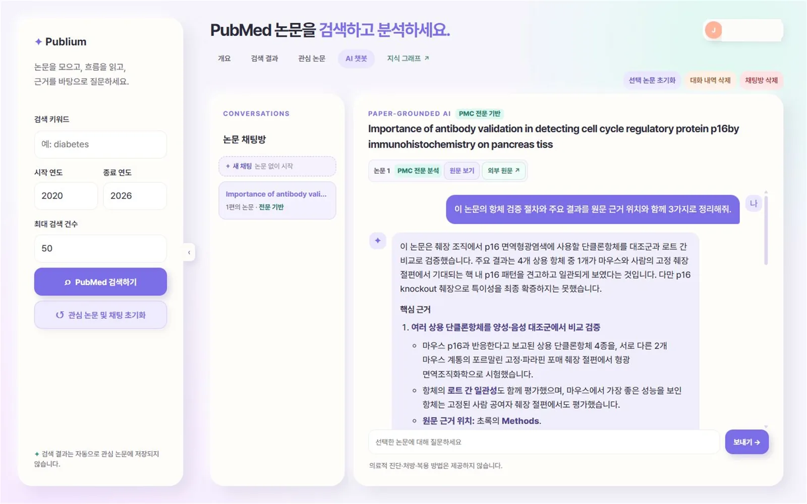
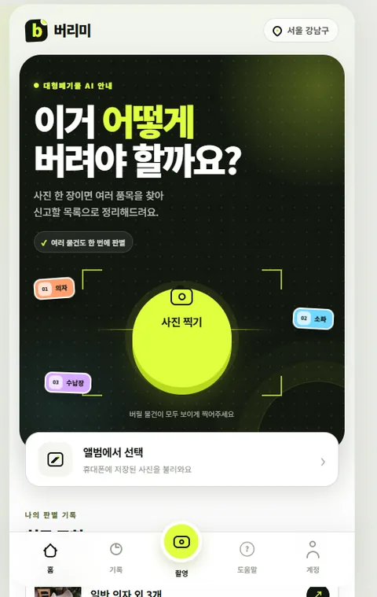
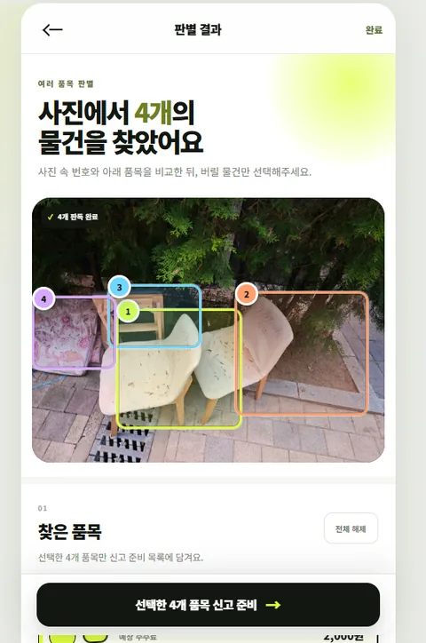
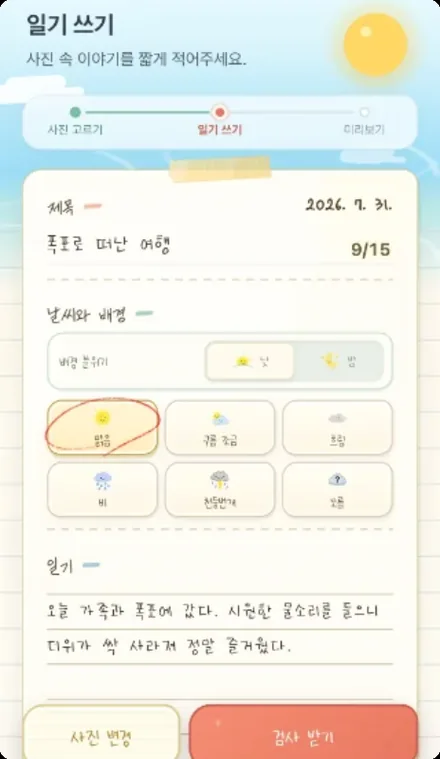
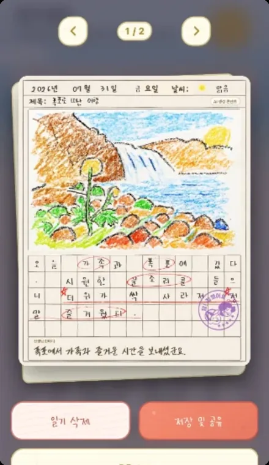
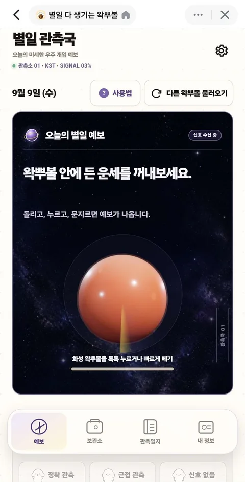
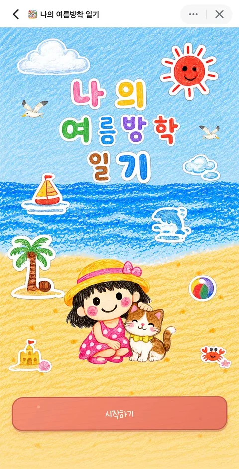

답변 구조
선택LangChain 툴콜링 에이전트. 모델이 검색 여부와 검색어를 정함
대안검색 결과를 프롬프트에 붙이는 고정 파이프라인
이유후속 질문이면 대화 기록의 PMID나 키워드로 다시 검색해야 했습니다. 검색어를 코드로 정하지 않아도 되는 대신, 찾지 못하면 없다고 답하도록 프롬프트로 순서를 잡았습니다.
외부 데이터 수집부터 LLM 처리, 백엔드, 배포까지 직접 구현합니다.
수학 교육 9년. 지금은 논문 검색, 사진 판별, 교육 데이터 서비스를 만듭니다.
AICE 자격증 관련 회사에서 일하기 시작했습니다.
팀장을 맡은 베어러블 PoC를 마쳤습니다. 과정의 최우수 교육생 2명이 모두 우리 팀에서 나왔습니다.
앱인토스 미니앱 2개를 정식 출시했습니다.
PubMed 논문을 수집하고, 수집한 논문 검색과 PMID 출처 표시를 연결한 연구 탐색 서비스

문제와 접근
논문 탐색에는 반복 검색과 출처 확인이 필요합니다. 사용자가 수집한 논문을 검색하는 도구를 연결하고, 검색 결과를 근거로 답변하도록 지시했습니다. 답변 끝에는 사용한 PMID를 표시합니다.
직접 구현한 것
선택LangChain 툴콜링 에이전트. 모델이 검색 여부와 검색어를 정함
대안검색 결과를 프롬프트에 붙이는 고정 파이프라인
이유후속 질문이면 대화 기록의 PMID나 키워드로 다시 검색해야 했습니다. 검색어를 코드로 정하지 않아도 되는 대신, 찾지 못하면 없다고 답하도록 프롬프트로 순서를 잡았습니다.
선택asyncio.to_thread로 동기 호출만 스레드로 분리
대안DB 드라이버와 HTTP 클라이언트를 전부 비동기로 교체
이유기존 동기 코드가 이미 동작하고 있었고 기간이 짧았습니다. 문제는 async 핸들러 안의 동기 호출이었으므로 호출 지점만 넘기는 쪽이 변경 범위가 가장 작았습니다.
선택서버 정규식 가드와 고정 응답
대안시스템 프롬프트로만 금지
이유프롬프트 지시는 우회될 수 있고, 차단할 때 반환하는 문구는 항상 같아야 했습니다. LLM 호출 전에 서버에서 끊으면 비용도 들지 않습니다.
트러블슈팅
논문 수집 요청이 길어지면 서버 전체가 응답하지 않았습니다.
사진 한 장에서 여러 대형폐기물을 나누어 보고, 강남구 공식 수수료 기준과 신고 경로까지 연결한 서비스


사진 속 여러 폐기물을 품목별로 분리한 뒤 행정 기준과 연결했습니다. VLM의 추정값을 그대로 노출하지 않고 고정 스키마로 받은 뒤, 강남구 공식 수수료 카탈로그와 다시 매칭했습니다.
Supabase 하나로 Auth, Storage, Postgres, 큐, 워커까지
대안AWS Cognito, S3, DynamoDB, SQS, Lambda 조합 (첫날 설계)
이유28시간 안에 구현과 배포를 마치기 위해, 사용 경험이 있는 Supabase로 전환했습니다. SQS가 맡을 큐는 Postgres 행과 pg_net으로 구현해 인프라 설정 범위를 줄였습니다.
202 반환 후 Postgres 큐와 워커, 브라우저는 폴링
대안요청 핸들러에서 VLM 응답까지 동기로 대기
이유동기로 붙였을 때 로딩만 걸리고, 요청이 서버에 닿았는지 VLM이 실패했는지 화면에서 알 수 없었습니다. 작업을 행으로 남기면 어느 단계에서 멈췄는지 상태와 오류 메시지가 남습니다.
Structured Outputs strict JSON Schema, guardrail 필드 포함
대안자유 텍스트 응답을 서버에서 파싱
이유수수료 매칭에 필요한 입력을 strict JSON Schema로 고정했습니다. 모델이 반환한 guardrail 필드에 프롬프트 인젝션 신호가 있으면 결과를 저장하지 않고 실패 처리합니다.
비동기 분석 흐름
대학 정보와 고교학점제 화면을 마이폴리오에 연결하는 기업 연계 PoC
개발 2인과 기획 3인으로 구성된 팀을 이끌며 화면 구현과 요구사항 조율, 배포를 맡았습니다.
기업 연계 프로젝트라 저장소는 비공개입니다.
나의 여름방학 일기와 별일을 토스 앱인토스에 정식 출시했습니다. 하나는 기획을 주도했고 하나는 팀장이었습니다.
사진과 짧은 글을 올리면 AI가 문장을 다듬고 크레파스 그림일기로 바꿔 주는 미니앱
2026.07기획 주도, 작성부 구현


사소한 하루를 진지하게 관측하고 시상하는 운세 기록 미니앱
2026.08팀장, 3D와 기록 흐름 구현React 19, TypeScript, three.js


개인 프로젝트
매일 사용하는 개인 AI 에이전트. 반복 작업을 에이전트에 맡길지 코드로 고정할지 실험하는 기반.
Autonomous Neuro Drive. 활동과 대화를 넣어 장기 지식으로 쌓는 local-first LLM 위키.
코딩 에이전트가 코드베이스의 의도와 주의점을 찾도록 만든 코드 탐색, 맥락 규약.
휴대폰과 데스크톱을 연결해 생활 작업을 단계별로 실행하는 MCP 기반 자동화 도구. LifeTrace(활동 기록)와 연동.
개인 재무 에이전트. Playwright MCP로 카드 사용 내역을 수집해 지출을 정리하고 소비를 관리. 나비서와 연동.
과외 일정을 강사, 학생, 보호자가 역할별로 나눠 보는 PWA. 기획부터 배포까지 혼자, 직접 쓰면서 고치는 중.